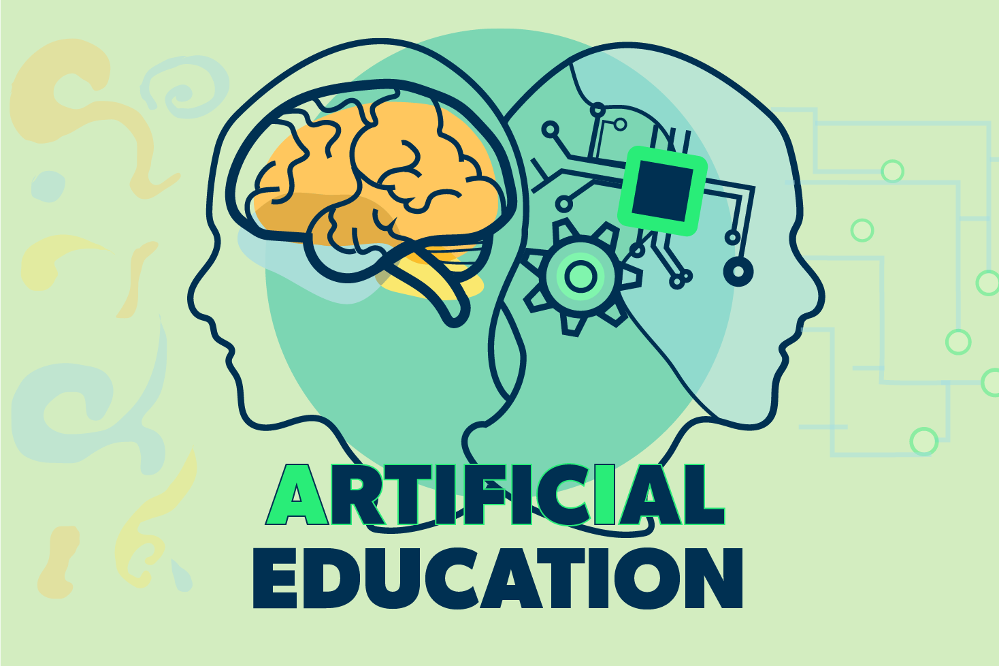

Artificial Intelligence (AI) has become an integral part of education, revolutionizing the way students learn and apply knowledge. In the context of Software Engineering, the use of AI tools such as ChatGPT, Bard, and Co-Pilot has added a new component to the learning experience. This essay reflects on my journey with AI in ICS 314, highlighting key concepts and tools that have shaped my understanding of software engineering principles.
For these WODs, I went to ChatGPT for assistance to implement different functions using Underscore. While ChatGPT provided a starting point, refining the solution took substantial trial and error. The AI helped guide me, but refining the details required my knowledge.
For the in-class practice WODs, I did not use ChatGPT to complete them. Since these WODs were meant for us to practice for the upcoming WOD, I felt that it was important for me to try and complete these practice WODs without any use of AI.
In-class WODs often demanded rapid problem-solving. I initially relied on AI, but the iterative nature of WODs meant that I had to balance AI assistance with independent problem-solving. The AI acted as a valuable resource, aiding in brainstorming solutions and providing a good guide to how to accomplish the WOD.
For essays, I did not use any AI tool because these essays always came from my accounts, and using AI wouldn’t help as it doesn’t know the information that I know.
The final project demanded a lot more problem-solving and personal research to add more knowledge to what I learned throughout this course. AI tools played a supplementary role, offering insights into coding patterns, and providing a good guideline to how to make my code work. However, human judgment was essential for project cohesion and quality.
AI was beneficial for quickly grasping new concepts and tutorials. For instance, I utilized ChatGPT to clarify complex concepts in functional programming, enhancing my understanding through real-time interaction.
I didn’t answer any questions in class or Discord throughout this course so there was no use of AI.
For Smart Questions, I didn’t ask or answer any Smart Questions using AI because I didn’t find it necessary to use.
AI proved valuable for generating code examples, especially for syntactical nuances. However, understanding the underlying logic and adapting code to specific requirements necessitated human interpretation.
I didn’t have to explain code to anyone because no one asked me to explain code to them and if they did I would be able to explain what my code does.
AI was effective in generating code snippets, aiding in the initial stages of development. However, since ChatGPT didn’t have enough information to format the code correctly, a lot of my code demanded constant refinement from me for it to work correctly.
Code documentation required more attention to detail to ensure clarity and coherence. While ChatGPT assisted in generating documentation, prompting it to the project’s specific requirements required me to have to look over it and fix it.
AI played a role in identifying syntax errors and common issues. However, comprehensive quality assurance requires a human understanding of project-specific requirements and potential pitfalls.
I did not use AI in any of the uses throughout this ICS 314 course because the majority of the reason I used ChatGPT was to help me fix errors in my code and create a guide to complete different functions in the WODs.
The incorporation of AI in ICS 314 has significantly influenced my learning experience. AI tools served as valuable resources for quick reference, conceptual understanding, and code generation. The interactive nature of AI, especially in live discussions, enhanced engagement and encouraged the exploration of diverse perspectives. However, the overreliance on AI posed challenges in developing independent problem-solving skills. While AI expedited the learning process, striking a balance between AI assistance and independent exploration proved crucial for a comprehensive understanding of software engineering concepts.
Beyond ICS 314, AI found practical applications in real-world projects and collaborative activities. The ability of AI to generate code snippets, offer insights, and facilitate quick problem-solving proved advantageous in time-sensitive scenarios. However, human judgment remained essential in synthesizing AI-generated solutions, considering project-specific code and instructions, and ensuring the overall quality of the deliverables.
The challenges encountered in the use of AI within the course include the limitations in understanding context and nuance, especially in complex problem-solving scenarios. Additionally, the potential for overreliance on AI tools posed a risk to the development of independent critical thinking skills. Opportunities lie in refining AI tools to better understand and adapt to contextual intricacies, enhancing their role as collaborative aids rather than substitutes for human judgment.
Comparing traditional teaching methods with AI-enhanced approaches reveals an error-filled landscape. While AI accelerates information retrieval and concept understanding, it falls short in using creativity, critical thinking, and the development of practical problem-solving skills. Traditional methods, that are used in human interaction and mentorship, excel in providing personalized feedback and guidance and contributing to a more holistic educational experience. The ideal approach combines the strengths of both, creating a symbiotic relationship between AI tools and traditional teaching methods.
The future role of AI in software engineering education holds a huge amount of potential. Advancements in AI technology should focus on refining contextual understanding, fostering creativity, and promoting independent problem-solving skills. Emphasizing the complementary nature of AI and human intellect will be crucial in optimizing the integration of AI in future courses. Continuous feedback loops, where AI aids learning and human judgment refines AI-generated outputs, can pave the way for a more effective and balanced educational experience.
Reflecting on the use of AI in ICS 314, it is evident that AI has become a valuable companion in the journey of learning software engineering principles. While AI tools have significantly impacted information retrieval, code generation, and conceptual understanding, their limitations highlight the irreplaceable role of human judgment, creativity, and critical thinking in the educational process. Striking a balance between AI assistance and independent exploration is essential for optimizing the integration of AI in future courses. As technology evolves, the collaborative teamwork between AI and human intellect will shape the future of software development courses and ICS courses in general.